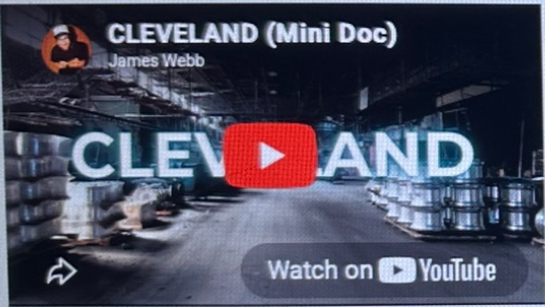
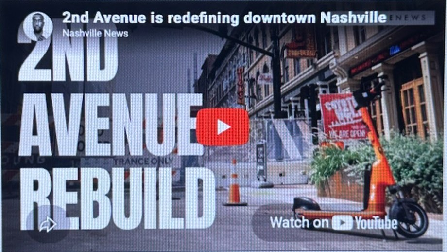

01 / DOCUMENTARYYOUTUBE
DYCE MEDIA
Documentary
Documenting the intentional moments and rituals that define the human experience.


Documenting the intentional moments and rituals that define the human experience.

